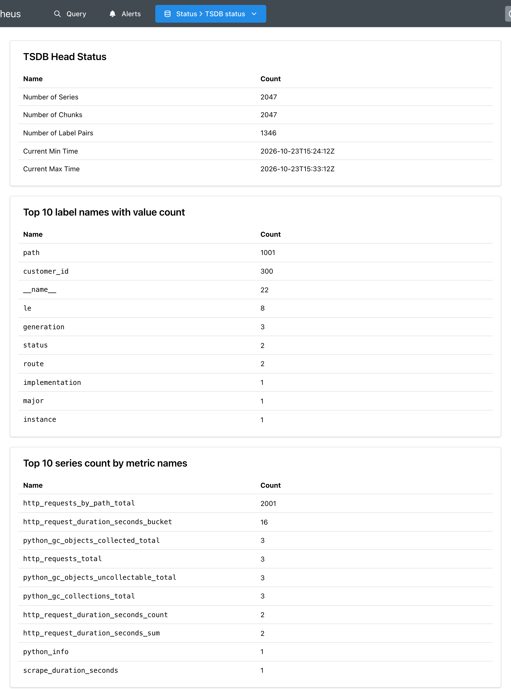

Модуль 3 · метрика как данные · модель данных
Глава 3.7
Кардинальность
и цена детализации
По главе 3.3 каждое новое сочетание меток создаёт ряд. В этой главе посчитано, сколько рядов получается из меток и что происходит, когда в метку попадает номер заказа или клиента. Опыт на стенде показывает рост рядов, объёма ответа и памяти Prometheus. Затем разобрано, как найти метку-виновника на странице TSDB status, какие значения в метки записывать и как ограничить число отсчётов в одном опросе.
- Категория
- Модель данных
- Уровень
- Средний
- Опирается на
- Глава 3.1: объём отсчётов; глава 3.3: идентичность ряда; глава 3.6: ряды гистограммы
- Результат
- Расчёт числа рядов метрики заранее; поиск метки, которая даёт лишние ряды
§1Число рядов из меток
Склад раскладывает футболки по цвету и размеру. Пять цветов и шесть размеров — 30 ячеек. Если добавить разделение по имени покупателя, ячеек станет столько, сколько покупателей умножить на 30.
Метки делят метрику на ряды. Три адреса, два метода и три кода ответа — до 18 рядов. Если добавить метку с номером клиента, рядов станет до 18 на каждого клиента.
Кардинальностьcardinality · число рядов
Число разных рядов метрики, то есть разных сочетаний значений её меток. Говорят и о кардинальности одной метки — числе её разных значений.
Наибольшее число рядов — произведение числа значений всех меток. Настоящее число меньше или равно ему: ряд появляется, только когда сочетание встретилось (глава 3.3).
Число рядов считается умножением, потому что метки независимы: каждое значение одной метки может встретиться с каждым значением другой. У счётчика запросов стенда три метки приложения. Если у route три значения, у method два и у status три, наибольшее число рядов — 3 × 2 × 3 = 18. На стенде встретилось меньше: три ряда на кадре главы 3.3.
В блоке ниже число рядов считается по числу значений каждой метки. Кнопки подставляют примеры из этой главы.
Первые три метки дают десятки рядов, и это нормальный размер. Если вместо шаблона адреса записать полный путь с номером заказа, у метки станет тысяча значений, а рядов — до 6 000. Если добавить ещё номер клиента, — до 1,8 миллиона на одну метрику и один target. Каждая метка с неограниченным числом значений умножает всё остальное.
Расчёт показывает наибольшее число. На стенде можно проверить, сколько рядов получается на самом деле.
§2Опыт: полный путь и номер клиента в метках
Если в ведомость записывать каждый визит с именем посетителя и номером кабинета, за месяц в ней будут тысячи строк. Если записывать только число визитов по отделениям — десяток строк, сколько бы ни было визитов.
Метрика с шаблоном адреса при новых запросах меняет значения, а число строк остаётся прежним. Метрика с полным путём и номером клиента добавляет строку почти на каждый запрос.
Для опыта сервис запускается с переменной BAD_LABELS=1. Тогда, кроме обычного счётчика, он ведёт второй — http_requests_by_path_total с двумя метками: path — полный путь запроса, customer_id — номер клиента из заголовка X-Customer-Id.
# шаблон адреса: /orders/{order_id} HTTP_REQUESTS.labels(request.method, route, str(response.status_code)).inc() # полный путь /orders/17 и номер клиента — только при BAD_LABELS=1 customer = request.headers.get("X-Customer-Id", "none") REQUESTS_BY_PATH.labels(request.url.path, customer).inc()
Разница между двумя вызовами — в первом значении метки. route берётся из описания маршрута FastAPI и для всех заказов одинаков: /orders/{order_id}. request.url.path — путь из запроса, в нём стоит номер: /orders/17, /orders/18.
Опыт шёл в три шага. Сначала 20 запросов к заказам 1–20. Затем 980 запросов к заказам 21–1000, номер клиента выбирался случайно от 1 до 300. Затем ещё 1000 запросов к тем же заказам 1–1000 с новыми случайными номерами клиентов. После каждого шага Prometheus выполнил опрос.
| После шага | Запросов всего | http_requests_total | http_requests_by_path_total | Рядов в базе |
|---|---|---|---|---|
| 1 | 20 | 2 | 21 | 66 |
| 2 | 1 000 | 3 | 1 001 | 1 047 |
| 3 | 2 000 | 3 | 2 001 | 2 047 |
Обычный счётчик после двух тысяч запросов занимает три ряда. Это успешные запросы к заказам, ответы 404 для номеров больше 500 и запрос к адресу /, которым проверялся запуск сервиса. У счётчика с полным путём каждый запрос к заказу дал новый ряд: 2 000 запросов — 2 000 рядов. Ещё один ряд дал тот же запрос к /.
Полосы в одном масштабе. Полоса зелёного счётчика — 3 из 2 001, на схеме она почти не видна.
Третий шаг показывает, как действует вторая метка. Адресов не прибавилось: их по-прежнему тысяча. Но запрос к тому же заказу пришёл от другого клиента, и сочетание path и customer_id оказалось новым. Например, у заказа 17 стало два ряда: customer_id="4" и customer_id="185". При продолжении опыта ряды росли бы до 1 000 × 300 = 300 000.
Ряды — не только строки в таблице запроса. За каждым рядом стоит работа приложения, сети и Prometheus.
§3Что растёт вместе с числом рядов
Если в отчёте строка на каждого покупателя, отчёт печатается дольше, его дольше везти и негде хранить. Расходы растут на каждом шаге, где с отчётом что-то делают.
Каждый ряд нужно держать в памяти приложения, записать в ответ /metrics, передать по сети, разобрать и сохранить в Prometheus.
Опыт не добавил сервису лишних запросов: их было бы столько же и с одним обычным счётчиком. Изменился объём работы на всём пути числа из модуля 2. На стенде измерено, как росли ответ /metrics и данные Prometheus.
| После шага | Ответ /metrics, байт | Строк значений | scrape_samples_scraped | Память меток path в TSDB, байт |
|---|---|---|---|---|
| 1 | 5 516 | 61 | 61 | — |
| 2 | 73 787 | 1 042 | 1 042 | 16 900 |
| 3 | 143 325 | 2 042 | 2 042 | 33 793 |
Ответ /metrics вырос в 26 раз: с 5,5 до 143 килобайт. Этот текст приложение собирает при каждом опросе, а Prometheus разбирает раз в 15 секунд. Ряд scrape_samples_scraped, который Prometheus пишет после опроса, совпадает с числом строк значений: 2 042 отсчёта за опрос. По расчёту главы 3.1 это 2 042 × 5 760 ≈ 11,8 миллиона отсчётов в сутки вместо 350 тысяч до опыта.
Последний столбец взят со страницы TSDB status: столько памяти Prometheus занимают значения метки path. Тысяча адресов — 33 килобайта. Кроме значений меток, Prometheus держит в памяти каждый ряд с его последними отсчётами, и эта часть растёт с числом рядов. Стенд маленький, и все числа здесь в килобайтах. В рабочей системе с сотнями target и миллионами рядов этот рост может измеряться гигабайтами памяти сервера.
В опыте заранее известно, какая метка виновата. В настоящей системе её нужно найти, и для этого у Prometheus есть отдельная страница.
§4Страница TSDB status
Чтобы понять, что занимает склад, смотрят опись: каких товаров больше всего и в каких отделах. Первые строки описи сразу показывают, откуда переполнение.
Страница перечисляет метрики с наибольшим числом рядов и метки с наибольшим числом значений. Первые строки показывают, какая метрика и какая метка дают ряды.
TSDB — база временных рядов Prometheus, сокращение от time series database. Страница открывается в меню Status → TSDB status. Ниже снимок после третьего шага опыта.

На странице несколько таблиц, и для поиска виновника нужны три верхние. TSDB Head Status — общее число рядов в памяти: Number of Series 2047. Top 10 label names with value count — метки с наибольшим числом значений: path — 1001, customer_id — 300. Для сравнения, у route — 2, у status — 2. Top 10 series count by metric names — метрики с наибольшим числом рядов: http_requests_by_path_total — 2001, следующая за ней — 16.
Порядок поиска получается такой. Во второй таблице видно, у какой метки слишком много значений. В третьей — какая метрика даёт ряды. Затем в коде приложения находят место, где эта метрика получает значение метки, и смотрят, откуда оно берётся. На стенде это вызов REQUESTS_BY_PATH.labels(request.url.path, customer).
Когда метка найдена, нужно выбрать, что записывать в неё вместо номера.
§5Какие значения записывать в метки
В отчёт за месяц пишут число приёмов по отделениям. Фамилии пациентов остаются в медицинских картах. Отчёт отвечает на вопрос «сколько», карта — на вопрос «кто и что».
В метки пишут значения из короткого списка: метод, шаблон адреса, код. Номер заказа и клиента остаются в логе и трассе (модуль 1).
Правило выбора: значение метки берётся из небольшого заранее известного набора. Документация Prometheus советует держать кардинальность большинства метрик ниже 10, а метрики с большим числом рядов ограничивать несколькими на всю систему. Значения, у которых набор не ограничен, в метки не записывают.
| Значение | Сколько разных | Где хранить |
|---|---|---|
| Метод HTTP | несколько | Метка method |
Шаблон адреса /orders/{order_id} | сколько маршрутов в коде | Метка route |
| Код ответа | несколько десятков | Метка status, или класс кода: 2xx, 4xx, 5xx |
Полный путь /orders/17 | сколько заказов | Лог запроса |
| Номер клиента, адрес почты | сколько клиентов | Лог, трасса |
| Идентификатор запроса | по одному на запрос | Лог, трасса (глава 1.5) |
| Текст ошибки | не ограничено | Лог; в метку — тип ошибки из короткого списка |
На стенде полный путь заменён шаблоном. Функция route_of берёт описание маршрута, который FastAPI выбрал для запроса, и возвращает его шаблон. Для запроса без маршрута она возвращает "unknown". Если бы она возвращала путь, запросы к случайным адресам создавали бы ряды так же, как номера заказов.
def route_of(request: Request) -> str: route = request.scope.get("route") return getattr(route, "path", "unknown")
Словарь request.scope хранит сведения о запросе, и после выбора маршрута в нём есть ключ "route". Функция getattr читает у маршрута поле path — шаблон /orders/{order_id}. Если маршрута нет, она возвращает значение по умолчанию "unknown".
Правила выбора меток предотвращают рост рядов в коде. На стороне Prometheus есть предохранитель на случай, если ошибка всё же попала в рабочую версию.
§6Предел sample_limit
Если в розетку включили слишком мощный прибор, предохранитель отключает всю линию. Свет гаснет во всей комнате, и проводка остаётся целой.
Если ответ target содержит больше отсчётов, чем разрешено, Prometheus отклоняет весь опрос. Пропадают все метрики этого target, но база не растёт.
Параметр sample_limit задаётся в задании и ограничивает число отсчётов в одном ответе. На стенде для опыта есть отдельный файл настроек с пределом 500.
scrape_configs:
- job_name: orders
sample_limit: 500
static_configs:
- targets: ['api:8000']
Prometheus запущен с этим файлом командой PROM_CONFIG=prometheus-limit.yml BAD_LABELS=1 docker compose up -d prometheus. Ответ сервиса в этот момент содержал 2 042 отсчёта. На странице Target health target перешёл в состояние DOWN с текстом ошибки:
sample limit exceeded
Ряд up стал равен 0, а scrape_samples_scraped показал 2042: ответ получен и прочитан, но отклонён целиком. Вместе с лишними рядами не сохранились и нужные: счётчик заказов, очередь, гистограмма. Поэтому предел выбирают с запасом над обычным числом отсчётов target, чтобы он срабатывал только при ошибке. На стенде в начале опыта отсчётов было 61, и предел 500 оставлял запас почти в восемь раз.
После срабатывания предела нужно исправить метки в приложении: предел останавливает рост базы, но не возвращает данные. Пока ошибка не исправлена, у target нет ни одного нового отсчёта.
§7Проверьте себя
Вопрос 1У метрики метки route (5 значений), method (2) и status (4). Сколько рядов может быть у неё на одном target в наибольшем случае?
Числа значений не складывают: каждое значение одной метки может встретиться с каждым значением другой.
Верно: 5 × 2 × 4.
3 — число меток. Рядов столько, сколько сочетаний значений.
Вопрос 2Что из этого подходит для значения метки?
Сколько пользователей, столько значений. Почту хранят в логе.
Верно. Два значения из известного набора — так устроена метка
paymentна стенде.Почти каждое значение новое. Длительность записывают в гистограмму.
Вопрос 3На странице TSDB status в таблице Top 10 label names with value count первой стоит метка request_id с числом 48 000. Что это значит?
Верно. Следующий шаг — найти метрику в таблице Top 10 series count by metric names и место в коде.
Число значений метки — это число разных значений в базе. Число запросов показывает счётчик.
Таблица считает разные значения меток в базе. Отклонённые отсчёты в неё не попадают.
Вопрос 4У задания sample_limit: 1000, ответ target содержит 1 200 отсчётов. Что сохранит Prometheus?
Ответ отклоняется целиком: на стенде при пределе 500 не сохранился ни один отсчёт из 2 042.
Предел отклоняет опрос целиком, на стенде target перешёл в DOWN.
Верно. Ошибка — sample limit exceeded.
- Prometheus. Instrumentation: use labels; do not overuse labels — prometheus.io/docs/practices/instrumentation
- Prometheus. Metric and label naming: labels — prometheus.io/docs/practices/naming
- Prometheus. Configuration: scrape_config, sample_limit — prometheus.io/docs/prometheus/latest/configuration/configuration
- Стенд модуля 3: опыт с BAD_LABELS=1 и sample_limit 23.10.2026